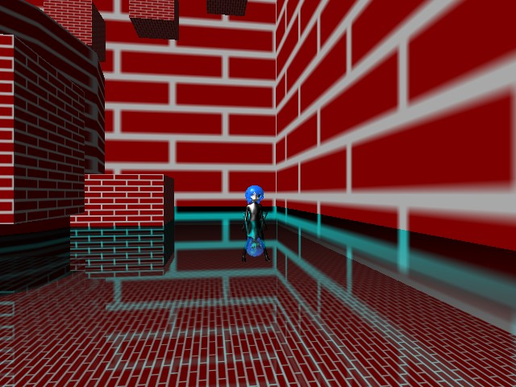
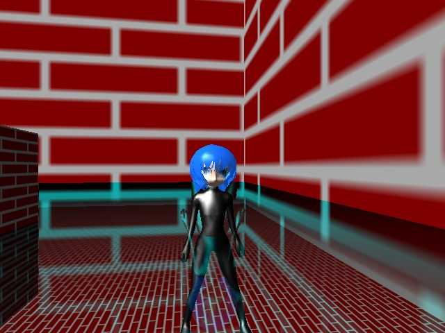

サンプルプログラム フレネル反射基本 ( 要プログラマブルシェーダー２．０ )

鏡面効果基本（ シェーダー使用版 ） の反射の方式をフレネル反射に変更したサンプルプログラムです。
フレネル反射とは、簡単に説明すると水面のように垂直に近い角度から見ると反射率は落ちて、鉛直に近い角度から見ると反射率が上がる反射のことを言います。
↓こちらのスクリーンショットはキャラクターの腰の辺りにある平面にフレネル反射を施しています。
カメラ( 視点 )に近い部分ほど反射率が低くなっているのは、手前の部分ほどカメラ( 視点 )から平面への角度が垂直に近くなるからです。
なので↑のスクリーンショットではキャラクターが立っているあたりの平面はほぼ反射率１００％となり平面の下側の床が殆ど見えませんが、
キャラクターにカメラが近づくとキャラクターの周囲の平面がカメラ( 視点 )から垂直に近い角度になるので↓のスクリーンショットのように
キャラクターの腰から下も見えるようになります。

水面の反射はこのフレネル反射なので、リアルな水面表現をしたい場合に有効です。
尚、このサンプルではフレネル反射の計算処理に「マルペケつくろーどっとコム」様のフレネル反射解説にあるピクセルシェーダープログラムを
使用させていただいております。m(_ _)m
＜マルペケつくろーどっとコム＞
http://marupeke296.com/index.html
プログラムの実行に必要なファイルのセットはこちらにあります。
Ｃ＋＋のプログラム
フレネル反射処理の頂点シェーダープログラム
フレネル反射処理のピクセルシェーダープログラム
戻る